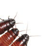
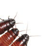

| Evan: |
So the other day I was in my apartment and I went into the bathroom and there was a giant cockroach in the toilet. |
| Tammy: |
Ewww! |
| Evan: |
Yeah, no kidding. It started making these crazy noises and then it flew away. |
| Tammy: |
Oh, that’s horrible. |
| Evan: |
Yes, I was… I was devastated. I didn’t know what to do. Do you have any strange or crazy fears of bugs? |
| Tammy: |
I do actually. It’s kind of embarrassing to mention but I am afraid of water bugs or cockroaches or anything pretty much that goes crunch under your shoe. |
| Evan: |
Eww, water bugs. |
| Tammy: |
I know! They fly! |
| Evan: |
What happens if you see a water bug? |
| Tammy: |
One of two things, that whole flight or fr… erm… fight… flight-or-fight reaction. Either I sit there and scream and do absolutely nothing or I run out. |
| Evan: |
What happened the last time you saw a water bug? |
| Tammy: |
Well the last time I saw a water bug, my cousin kicked it at me and I left the building. I ran out of the apartment and I waited in the street. |
| Evan: |
And you’re scarred emotionally forever. |
| Tammy: |
Yes, I am! ✪ |

 
